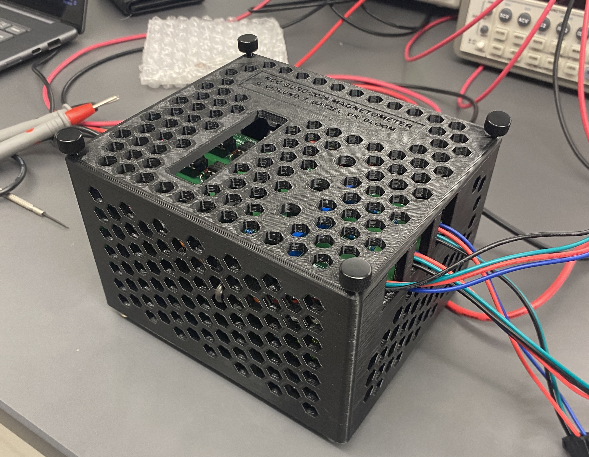

01
3-Axis Magnetometer
Custom magnetic-field measurement system combining analog electronics, PCB design, a 16-bit ADC, embedded firmware, and Python-based data acquisition.
Collaborative undergraduate research conducted with Cameron Gidlund under the mentorship of Dr. Paul Bloom at North Central College.